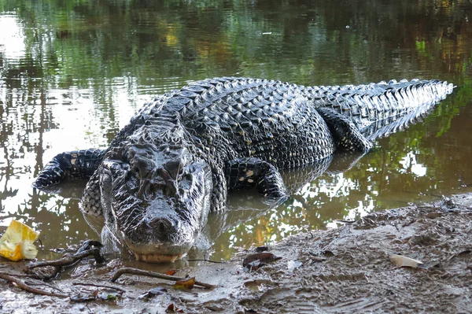
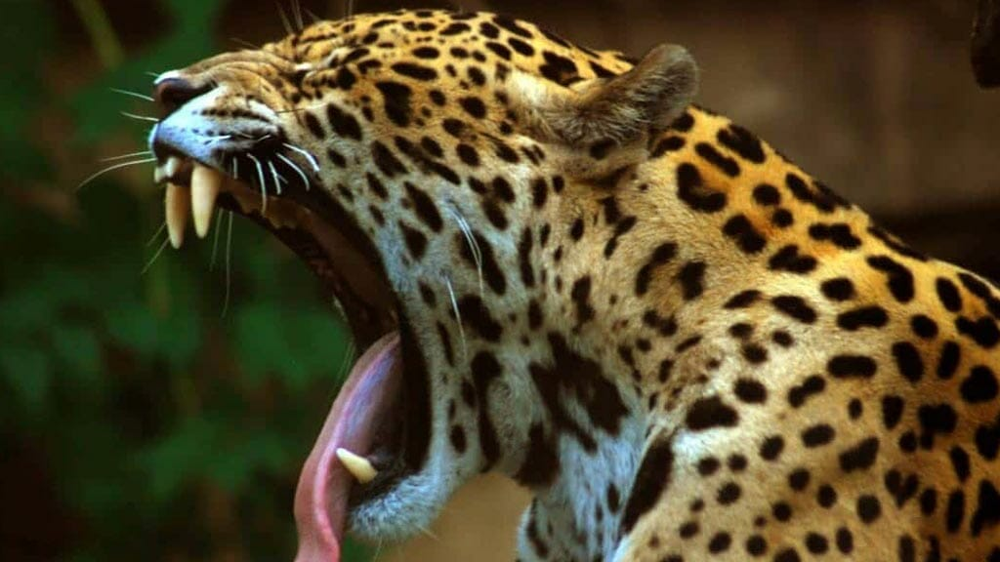

Si la jungle amazonienne nous offre un monde merveilleux Mais parmi tous ces animaux qui y vivent se trouvent des créatures pour le moins dangereuses que vous n’aimeriez certainement pas rencontrer.
Aussi appelée anaconda vert, l’anaconda géant est le plus grand serpent de monde. Et pour cause, il peut mesurer jusqu’à 9 mètres de long et peser plus de 250 kg. Il vit exclusivement les marais, les ruisseaux et les rivières de la forêt amazonienne. Ce serpent tue sa proie en l’étouffant puis l’avale entièrement. Il se nourrit principalement de cerfs, de caïmans, de tortues et même de jaguars.
Avec une taille qui peut aller jusqu’à 6 mètres de long, le caïman noir a de quoi impressionner. Il est même considéré comme l’un des crocodiles les plus grands du monde. Avec sa mâchoire puissante, il attrape sa proie et la noie puis l’avale en entier.
Réputé pour son agressivité, le piranha n’est en fait pas aussi dangereux qu’il n’y paraît pour l’être humain. Cependant, il est tout de même capable de leur infliger des blessures profondes grâce à ses dents tranchantes et à sa mâchoire particulièrement puissante
La fourmi balle de fusil fait partie des insectes a la pique la plus douloureuse du monde. En effet, sa piqûre serait aussi douloureuse qu’un coup de fusil. De plus, l’effet de son venin peut agir pendant plus de 24 heures. Ainsi, cette fourmi de grande taille est tout à fait capable de tuer de petits animaux, comme un écureuil par exemple.
Le jaguar est le félin à la morsure la plus puissante du monde. En effet, cette dernière est bien plus efficace pour tuer les proies que celle du tigre ou même du lion
